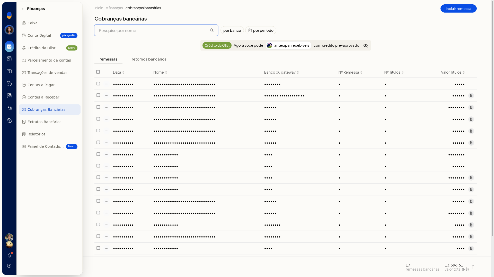
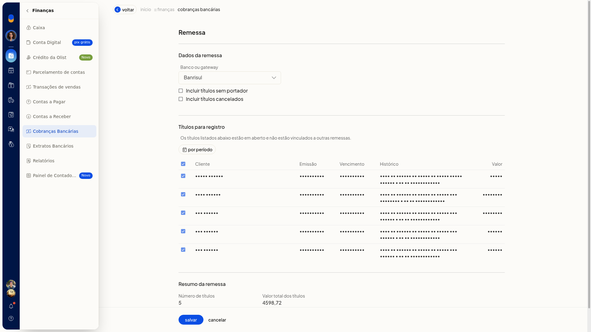
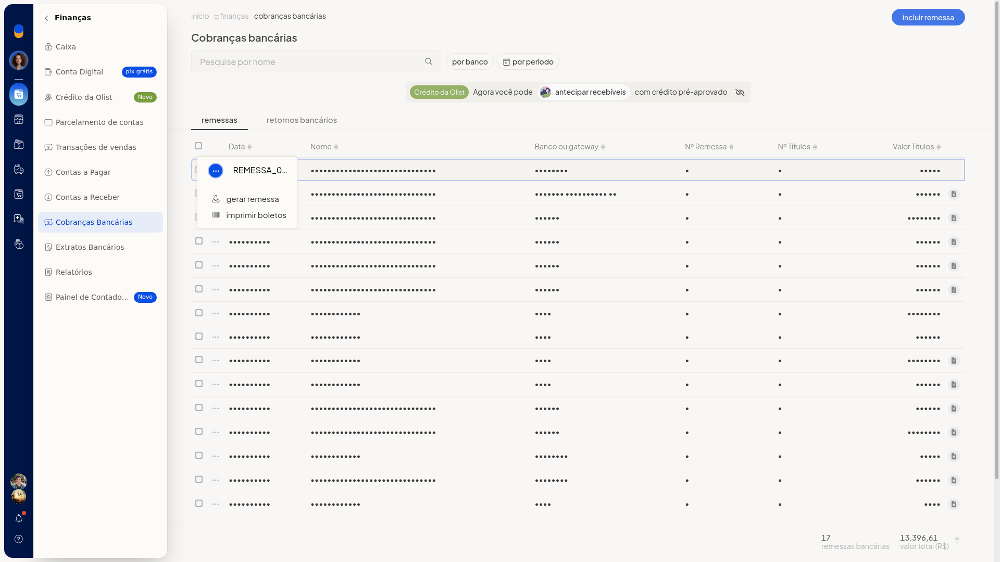
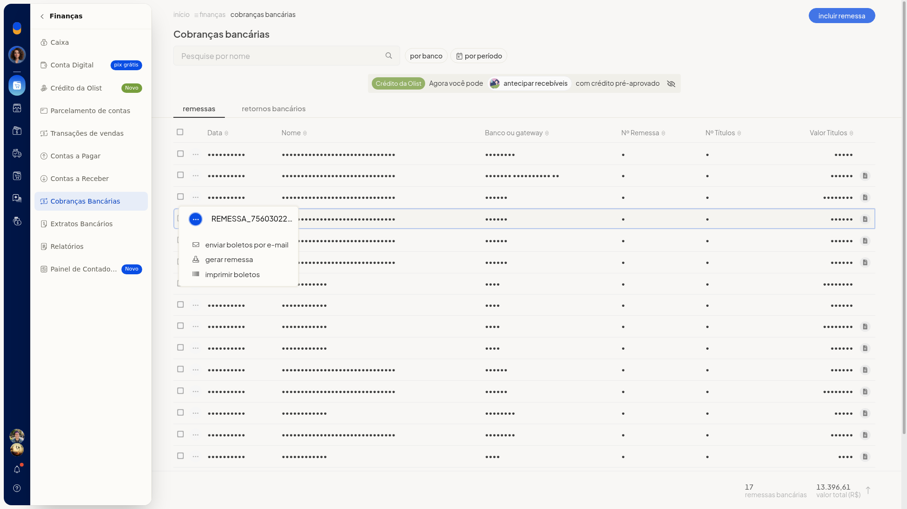
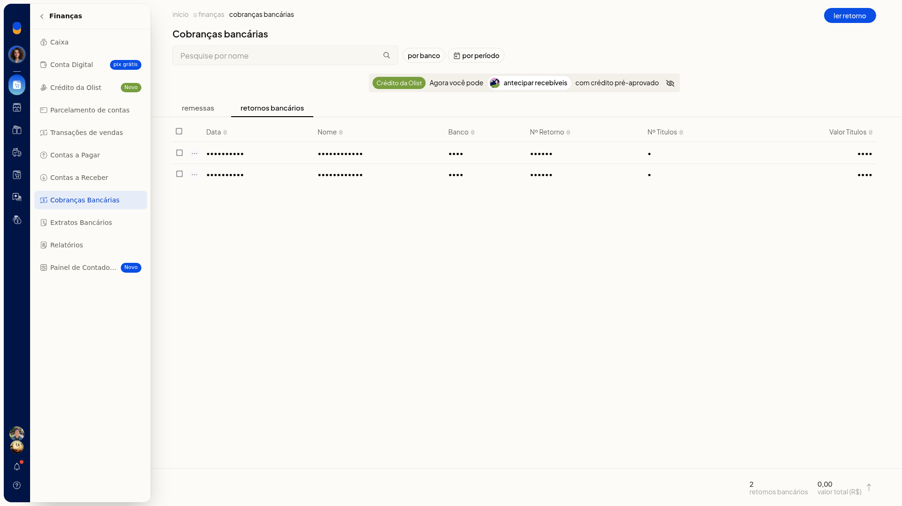
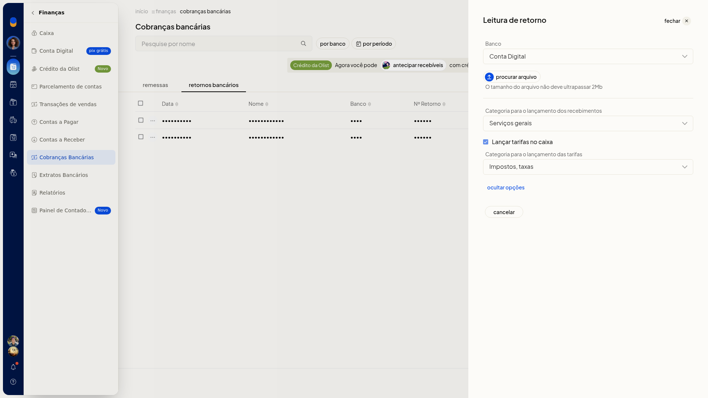
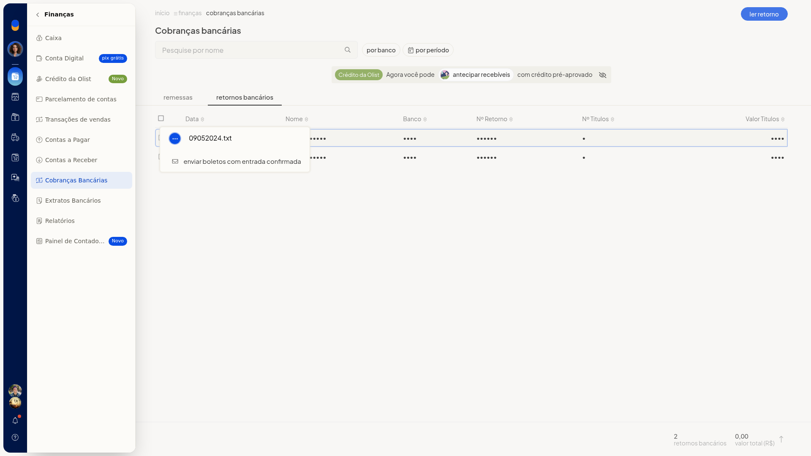

Cobranças bancárias
Pré-requisitos
- O banco ou gateway de cobrança precisa aparecer na lista do formulário de remessa ou de retorno.
Importante
- A remessa lista títulos em aberto que ainda não estão ligados a outra remessa.
- Títulos sem portador ou cancelados só entram se você marcar Incluir títulos sem portador ou Incluir títulos cancelados.
- O arquivo de retorno tem no máximo 2Mb.
Instruções
Incluir uma remessa
-
Acesse Finanças > Cobranças Bancárias.
-
Na aba Remessas, confira Incluir remessa, a busca por nome, por banco e por período, e as colunas Data, Nome, Banco ou gateway, Nº Remessa, Nº Títulos e Valor Títulos.

-
Clique em Incluir remessa.
-
Selecione Banco ou gateway. O campo não é obrigatório.
-
Marque Incluir títulos sem portador ou Incluir títulos cancelados somente se quiser esses títulos. As duas opções não são obrigatórias.
-
Confira os títulos em aberto, com Cliente, Emissão, Vencimento, Histórico e Valor, e o resumo com o número de títulos e o valor total.

-
Clique em Cancelar para fechar sem gravar a remessa.
Gerar o arquivo, imprimir ou enviar os boletos
-
Na aba Remessas, abra o menu da remessa.
-
Se o arquivo ainda não foi gerado, use Gerar remessa ou Imprimir boletos.

-
Se a linha indica remessa com arquivo gerado, use também Enviar boletos por e-mail.

Ler um retorno bancário
-
Acesse Finanças > Cobranças Bancárias.
-
Abra a aba Retornos bancários.
-
Confira Ler retorno, a busca por nome, por banco e por período, e as colunas Data, Nome, Banco, Nº Retorno, Nº Titulos e Valor Titulos.

-
Clique em Ler retorno.
-
Selecione o banco ou gateway. O campo não é obrigatório.
-
Clique em Procurar arquivo e indique o arquivo de retorno, de no máximo 2Mb. O campo não é obrigatório.
-
Clique em Mais opções.
-
Selecione Categoria recebimentos. O campo não é obrigatório e usa uma categoria já cadastrada.
-
Marque Lançar tarifas no caixa se quiser lançar as tarifas no caixa. A opção não é obrigatória.
-
Selecione Categoria tarifas se for lançar as tarifas. O campo não é obrigatório e usa uma categoria já cadastrada.
-
Clique em Ocultar opções para recolher esse bloco.

- Clique em Cancelar para sair sem processar o arquivo.
Enviar boletos com entrada confirmada
-
Na aba Retornos bancários, abra o menu de um retorno já listado.
-
Clique em Enviar boletos com entrada confirmada.

Resultado
Quando a remessa já tem arquivo gerado, ela consta na lista nessa condição e o menu também oferece Enviar boletos por e-mail.